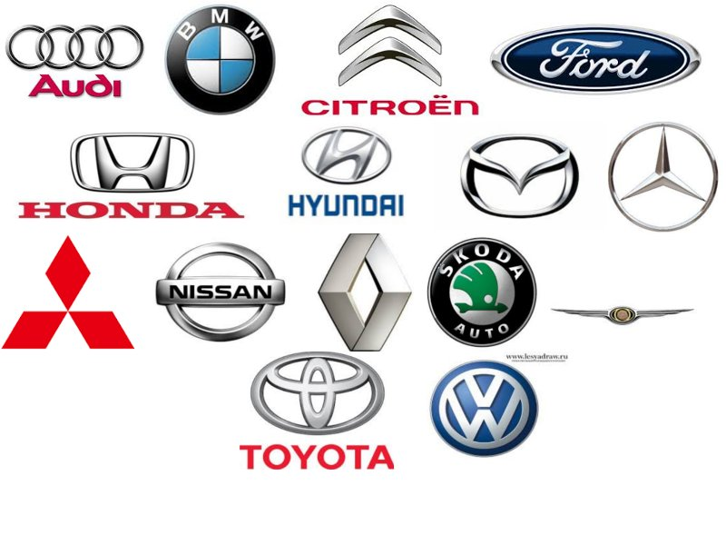

Ignatij Krasovskij
История автомобилей
История первого автомобиля началась ещё в 1768 году вместе с созданием паровых машин, способных перевозить человека. В 1806 году появились первые машины, приводимые в движение двигателями внутреннего сгорания на горючем газе, что привело к появлению в 1885 году повсеместно используемого сегодня газолинового или бензинового двигателя внутреннего сгорания. Машины, работающие на электричестве ненадолго появились в начале XX века, но почти полностью исчезли из поля зрения вплоть до начала XXI века, когда снова возникла заинтересованность в малотоксичном и экологически чистом транспорте.
Марки автомобилей
